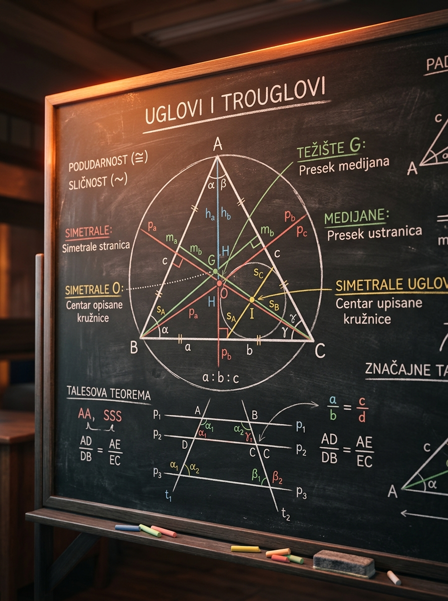

Kako da prepoznaš dovoljne uslove za podudarnost i sličnost, kako da koristiš Talesovu teoremu i kako da razlikuješ težište, ortocentar, centar opisane i upisane kružnice.
Matoteka znanje · Lekcija 42
Uglovi i trouglovi Podudarnost, sličnost i značajne tačke
Ovo je lekcija u kojoj geometrija prestaje da bude skup nepovezanih formula. Kada razumeš kako se iz uglova prelazi na podudarnost, iz paralelnosti na sličnost, a iz konstrukcije na značajne tačke trougla, dobijaš alat koji rešava veliki broj planimetrijskih zadataka na prijemnom ispitu.
Mnogo učenika prerano zaključi podudarnost iz tri ugla ili primeni Talesovu teoremu bez proverene paralelnosti. U geometriji je svaka tvrdnja jaka samo koliko i uslov koji je opravdava.
Na ispitu se često traži skrivena sličnost, dokaz da se neke duži poklapaju ili brzo prepoznavanje gde se nalaze ortocentar i centar opisane kružnice kod različitih tipova trougla.

Zašto je ova lekcija važna
Geometrijski zadaci retko traže formulu, češće traže pravi ugao posmatranja
Na prijemnom zadatak skoro nikada ne kaže: “Primeni kriterijum SUS.” Umesto toga dobiješ crtež sa paralelama, nekoliko jednakih uglova i jednu skrivenu konstrukciju. Tvoj posao je da prepoznaš da li treba da dokažeš podudarnost, da izvučeš sličnost ili da iskoristiš osobine centra trougla.
Ova lekcija je osnova za sinusnu i kosinusnu teoremu, za zadatke sa krugom, za analitičku geometriju i za stereometriju gde često prvo moraš da pronađeš pravi ravan presek.
U planimetriji često dobijaš samo jedan broj i puno odnosa. Bez sličnosti i podudarnosti ne možeš da pretvoriš crtež u račun.
Kada savladaš ovu lekciju, mnogo brže vidiš šta je zaista “dato” u zadatku, a šta samo deluje važno. To štedi vreme i smanjuje greške pod pritiskom.
Šta je prava misaona promena?
Učenici često geometriju uče kao spisak teorema. To nije dovoljno. Potreban je obrazac razmišljanja: nacrtaj, prepoznaj jednake uglove ili paralelnost, proceni da li imaš podudarnost ili sličnost, pa tek onda računaj duži i površine.
Minimalni algoritam za početak svakog zadatka
1
Označi sve što je jednako ili paralelno
U geometriji se pola rešenja krije u dobro obeleženom crtežu.
2
Traži ugaoni ili proporcionalni razlog
Ako vidiš paralelu, misli na Talesa i sličnost. Ako vidiš zajedničku stranicu i jednake uglove, misli na podudarnost.
3
Tek onda uvodi račun
Brojevi dolaze na kraju. Prvo moraš da opravdaš zašto neki odnosi uopšte važe.
Temelj
Osnove uglova i trouglova koje stalno koriste svi kasniji dokazi
Iako je fokus lekcije na podudarnosti, sličnosti i značajnim tačkama, sve to počiva na nekoliko veoma jednostavnih istina o uglovima u trouglu. Ako njih vidiš odmah, zadatak postaje kraći.
Ovo je najbrža putanja do nepoznatog ugla kada znaš druga dva. U dokazima se koristi neprestano.
Ako produžiš jednu stranicu trougla, spoljašnji ugao je jednak zbiru dva udaljena unutrašnja ugla.
Položaj ortocentra i centra opisane kružnice zavisi baš od toga da li je trougao oštar, prav ili tup.
Intuicija
Kada rešavaš zadatak, uglovi su često “najjeftinija informacija”. Nije ti potreban broj da bi ugao bio koristan. Dovoljno je da dva ugla budu jednaka i već si vrlo blizu sličnosti.
Posebno obrati pažnju na sledeće situacije: unakrsni uglovi, odgovarajući uglovi kod paralelnih pravih, uglovi uz pravu i zbir uglova u trouglu.
Brzi ugaoni primer
U trouglu \(ABC\) dati su \(\angle A=48^\circ\) i \(\angle B=67^\circ\). Koliki je ugao \(C\)?
1
Pozovi osnovnu relaciju
\(\angle A+\angle B+\angle C=180^\circ\).
2
Uvrsti brojeve
\(48^\circ+67^\circ+\angle C=180^\circ\).
3
Izračunaj
\(\angle C=180^\circ-115^\circ=65^\circ\).
Mikro-provera: ako je spoljašnji ugao kod temena \(C\) jednak \(124^\circ\), a jedan udaljeni unutrašnji ugao \(51^\circ\), koliki je drugi?
Po teoremi o spoljašnjem uglu važi \(124^\circ=51^\circ+x\), pa je \(x=73^\circ\).
Talesova teorema
Paralela u trouglu proizvodi proporcije
U okviru ove lekcije pod Talesovom teoremom mislimo na teoremu o proporcionalnim dužima: ako prava paralelna jednoj stranici trougla seče druge dve stranice, nastaju proporcionalni segmenti i manji trougao postaje sličan celom trouglu.
Ako su \(D\in AB\) i \(E\in AC\), a \(DE\parallel BC\), tada je \(\triangle ADE \sim \triangle ABC\).
Ovaj oblik je posebno koristan kada su dati “delovi” stranica, a ne cele stranice.
Važna napomena
Talesovu teoremu ne smeš koristiti bez paralelnosti. U mnogim zadacima upravo treba prvo dokazati da su dve prave paralelne, pa tek onda uvoditi proporcije. Ako to preskočiš, dobijaš neosnovan račun.
Vođeni primer: duži u trouglu sa paralelom
U trouglu \(ABC\) tačke \(D\in AB\) i \(E\in AC\) takve su da je \(DE\parallel BC\). Dato je \(AD=6\), \(DB=4\), \(AC=15\). Nađi \(AE\).
1
Prepoznaj slične trouglove
Iz \(DE\parallel BC\) sledi \(\triangle ADE \sim \triangle ABC\).
2
Izrazi celu stranicu
\(AB=AD+DB=6+4=10\).
3
Napiši odnos odgovarajućih stranica
\(\frac{AD}{AB}=\frac{AE}{AC}\), pa \(\frac{6}{10}=\frac{AE}{15}\).
4
Reši proporciju
\(AE=15\cdot \frac{6}{10}=9\).
Pedagoška poenta
Učenici često pamte formulu, ali promaše ideju. Suština nije u tome da mehanički pišeš razmere, nego da vidiš: paralela pravi jednake uglove, jednaki uglovi daju sličnost, a sličnost daje proporcije.
Dakle redosled je: paralelnost \(\to\) jednaki uglovi \(\to\) sličnost \(\to\) proporcije.
Mikro-provera: u istom rasporedu ako su \(AD=3\), \(DB=2\) i \(EC=8\), koliki je \(AE\)?
Po Talesovoj teoremi važi \(\frac{AD}{DB}=\frac{AE}{EC}\), pa je \(\frac{3}{2}=\frac{AE}{8}\). Odatle \(AE=12\).
Napomena o drugoj “Talesovoj teoremi” koju možda znaš iz škole
U geometriji kruga često se pod Talesovom teoremom misli i na tvrdnju da je ugao nad prečnikom pravi. Ta verzija je tačna i važna, ali u ovoj lekciji glavni fokus je na proporcionalnim dužima i sličnosti.
Podudarnost trouglova
Podudarni trouglovi imaju isti oblik i istu veličinu
Dva trougla su podudarna ako se mogu poklopiti bez rastezanja. To znači da su im odgovarajuće stranice jednake i odgovarajući uglovi jednaki. U praksi ne proveravaš baš sve odjednom, nego koristiš dovoljne kriterijume.
| Kriterijum | Šta mora da bude dato | Kako da ga čitaš na zadatku |
|---|---|---|
| SSS | Sve tri odgovarajuće stranice su jednake. | Ako su tri duži po parovima jednake, trouglovi su potpuno određeni. |
| SUS | Dve stranice i njima zahvaćen ugao su jednaki. | Važno je da ugao bude između te dve stranice, ne bilo koji ugao. |
| USU | Dva ugla i stranica između njih su jednaki. | Ovaj kriterijum je veoma čest u dokazima sa simetralama i jednakokrakim trouglovima. |
| Pravougli HK | Kod pravouglih trouglova: hipotenuza i jedna kateta. | Poseban koristan slučaj kada na crtežu prepoznaš dva prava ugla. |
Šta nije dovoljno?
Tri jednaka ugla nisu kriterijum podudarnosti. Oni daju samo sličnost. Trouglovi mogu imati iste uglove, a da jedan bude samo uvećana kopija drugog.
Klasičan dokaz u jednakokrakom trouglu
Neka je \(AB=AC\), a \(AD\) simetrala ugla \(\angle A\). Dokaži da je \(BD=DC\) i da je \(AD\perp BC\).
1
Posmatraj trouglove \(ABD\) i \(ACD\)
Imamo \(AB=AC\), \(AD\) je zajednička stranica i \(\angle BAD=\angle DAC\).
2
Primeni kriterijum SUS
Pošto su dve stranice i zahvaćen ugao jednaki, trouglovi su podudarni.
3
Izvuci posledice podudarnosti
Odmah sledi \(BD=DC\) i \(\angle ADB=\angle CDA\).
4
Iskoristi linearni par uglova
Pošto su \(\angle ADB\) i \(\angle CDA\) susedni uglovi na pravoj \(BC\), njihov zbir je \(180^\circ\). Ako su još i jednaki, svaki je \(90^\circ\). Zato je \(AD\perp BC\).
Zašto je ovaj primer bitan
Ovo je obrazac koji se pojavljuje stalno: pokažeš podudarnost, pa iz nje dobiješ mnogo više od onoga što je direktno dato. Jedna ista duž postaje i simetrala, i medijana, i visina. Na prijemnom se baš taj skok često očekuje.
Drugim rečima: podudarnost nije cilj sama po sebi. Ona je alat za dalje zaključivanje.
Mikro-provera: zašto kriterijum “dve stranice i neki ugao” nije uvek dovoljan za podudarnost?
Zato što ugao mora biti zahvaćen između te dve stranice. Ako je ugao naspram jedne od njih, možeš dobiti više različitih trouglova sa istim podacima. To je poznata SSA zamka.
Sličnost trouglova
Isti oblik, druga veličina
Slični trouglovi imaju jednake odgovarajuće uglove, a odgovarajuće stranice su proporcionalne. Ako je odnos sličnosti \(k\), onda se sve dužine množe sa \(k\), obimi sa \(k\), a površine sa \(k^2\).
Dva ugla su dovoljna jer je treći ugao automatski određen zbirom \(180^\circ\).
Dve proporcionalne stranice i njima zahvaćen ugao daju sličnost.
Ako su sve tri odgovarajuće stranice proporcionalne, trouglovi su slični.
Obimi sličnih trouglova menjaju se istim koeficijentom kao i stranice.
Ovo je česta ispitna zamka: površine ne rastu sa \(k\), nego sa kvadratom koeficijenta.
Ako je odnos sličnosti jedan, svi odgovarajući delovi su jednaki, pa su trouglovi podudarni.
Intuicija
Sličnost treba da zamišljaš kao fotografiju istog trougla na različitim zumovima. Ugao ostaje isti, oblik ostaje isti, ali dužine rastu ili se smanjuju u istom odnosu.
Zato je sličnost savršena za zadatke sa paralelama, visinama, senkama, razmerama i modelima “mali trougao unutar velikog trougla”.
Vođeni primer: nađi dve nepoznate duži
U trouglu \(ABC\) tačke \(D\in AB\) i \(E\in AC\) su takve da je \(DE\parallel BC\). Dato je \(AB=12\), \(AD=8\), \(AC=15\), \(BC=18\). Nađi \(AE\) i \(DE\).
1
Uoči sličnost
Pošto je \(DE\parallel BC\), trouglovi \(ADE\) i \(ABC\) su slični.
2
Nađi koeficijent sličnosti manjeg prema većem
\(k=\frac{AD}{AB}=\frac{8}{12}=\frac{2}{3}\).
3
Primenjuj isti odnos na sve odgovarajuće stranice
\(AE=k\cdot AC=\frac{2}{3}\cdot 15=10\), a \(DE=k\cdot BC=\frac{2}{3}\cdot 18=12\).
4
Tumačenje
Kada jednom znaš \(k\), čitav zadatak postaje linearan: svaka duž se množi istim koeficijentom.
Mikro-provera: ako je odnos sličnosti dva trougla \(k=3\), kako se menjaju obim i površina?
Obim se menja tri puta, a površina devet puta, jer je \(\frac{P_1}{P_2}=k^2=9\).
Značajne tačke trougla
Četiri centra koja moraš da razlikuješ bez kolebanja
U trouglu postoje posebne prave koje seku sve tri stranice ili sve tri uglovne oblasti na smislen način. Njihovi preseci daju težište, ortocentar, centar opisane i centar upisane kružnice. Svaka od ovih tačaka nastaje iz drugačije konstrukcije i nosi drugačije osobine.
Medijana spaja teme sa sredinom naspramne stranice. Sve tri medijane seku se u jednoj tački.
- Uvek je unutar trougla.
- Deli svaku medijanu u odnosu \(2:1\), računato od temena.
- Fizička interpretacija: težišna tačka tanke ploče trouglastog oblika.
Visina je prava kroz teme normalna na naspramnu stranicu ili njen produžetak.
- U oštrouglom trouglu je unutra.
- U pravouglom je u temenu pravog ugla.
- U tupouglom je van trougla.
Simetrala stranice je prava normalna na stranicu kroz njenu sredinu.
- Jednako je udaljen od sva tri temena.
- U pravouglom trouglu je u sredini hipotenuze.
- U tupouglom trouglu leži van trougla.
Simetrala ugla deli ugao na dva jednaka dela.
- Uvek je unutar trougla.
- Jednako je udaljen od sve tri stranice.
- To je centar kružnice koja dodiruje sve tri stranice trougla.
Oštrougli trougao je najmirniji slučaj: svi glavni centri ostaju u unutrašnjosti.
Ovo je omiljena ispitna činjenica, jer brzo skraćuje mnoge konstrukcije.
Ova relacija se uglavnom koristi u naprednijim zadacima i kao prepoznavanje dublje strukture trougla.
Primer 1: odnos na medijani
U trouglu \(ABC\) medijana \(AM\) ima dužinu \(15\). Kolike su duži \(AG\) i \(GM\), gde je \(G\) težište?
1
Pozovi osnovnu osobinu
Težište deli medijanu u odnosu \(2:1\), pri čemu je duži deo uz teme.
2
Razloži celu medijanu
\(AM=AG+GM\), a odnos je \(AG:GM=2:1\).
3
Izračunaj
Tri jednaka dela daju \(15\), pa je jedan deo \(5\). Zato je \(AG=10\), a \(GM=5\).
Primer 2: pravougli trougao
Gde se nalazi centar opisane kružnice pravouglog trougla?
1
Seti se konstrukcije
Centar opisane kružnice je presek simetrala stranica.
2
Primeni poznatu činjenicu za pravougli trougao
To je sredina hipotenuze.
3
Zašto?
Sredina hipotenuze jednako je udaljena od sva tri temena pravouglog trougla.
Mikro-provera: koje značajne tačke su uvek unutar trougla?
Težište \(G\) i centar upisane kružnice \(I\) su uvek unutar trougla. Ortocentar \(H\) i centar opisane kružnice \(O\) zavise od tipa trougla.
Interaktivna laboratorija
Pomeri fokus: od crtanja ka razumevanju konstrukcije
Menjaj tip trougla i režim prikaza. U režimu značajnih tačaka vidi kako se centri pomeraju. U režimu sličnosti vidi kako isti oblik ostaje isti dok se veličina menja i kako se pri \(k=1\) dobija podudarnost.
Canvas laboratorija trougla
Koristi kontrolne opcije i prati šta se menja na slici i u objašnjenju desno.
U režimu značajnih tačaka posmatraj kako položaj centra zavisi od tipa trougla.
Vođeni primeri
Tri tipa zadataka koja treba da umeš da prepoznaš odmah
Svaki od sledećih primera je konstruisan tako da oponaša tipičnu ispitnu situaciju: nije poenta u računu, nego u prepoznavanju pravog obrasca.
Za dva trougla znaš da imaju jednake uglove \(\alpha,\beta,\gamma\). Zaključak je: trouglovi su slični, ali nisu nužno podudarni. Potreban je još podatak o jednoj dužini ili koeficijentu sličnosti.
Kad se u trouglu pojavi prava paralelna jednoj stranici, ne kreći od Pitagore. Najpre napiši sličnost manjih i većih trouglova, pa zatim izvuci proporcije za duži.
Ako zadatak kaže da je trougao tupougli, to odmah daje informaciju da su ortocentar i centar opisane kružnice van trougla. To često skraćuje konstrukcioni deo rešenja.
Detaljan primer: površine sličnih trouglova
Dva trougla su slična sa koeficijentom \(k=\frac{3}{2}\). Ako je površina manjeg trougla \(24\), kolika je površina većeg?
1
Seti se kako se menjaju površine
Površine se menjaju sa \(k^2\), ne sa \(k\).
2
Izračunaj kvadrat koeficijenta
\(k^2=\left(\frac{3}{2}\right)^2=\frac{9}{4}\).
3
Pomnoži površinu manjeg trougla
\(24\cdot \frac{9}{4}=54\).
Detaljan primer: prepoznaj centar po osobini
Tačka u trouglu jednako je udaljena od sve tri stranice. Koja je to značajna tačka?
1
Pravilno pročitaj šta je dato
Nije rečeno “od temena”, nego “od stranica”. To odmah isključuje centar opisane kružnice.
2
Poveži osobinu sa konstrukcijom
Tačka jednako udaljena od stranica dobija se presekom simetrala uglova.
3
Zaključak
To je centar upisane kružnice \(I\).
Ključne formule i relacije
Šta mora da ti bude “u ruci” na prijemnom
Ove relacije nisu za bubanje bez razumevanja. Njihova vrednost je u tome što ti pomažu da brzo prepoznaš pravi potez u zadatku.
Prva relacija koju proveravaš kada tražiš ugao.
Koristan kada se u zadatku produžuje stranica trougla.
Pišeš tek kada si proverio paralelnost.
Sve odgovarajuće dužine menjaju se istim odnosom.
Vrlo česta zamka u zadacima sa površinama i zapreminama.
Uvek računaj od temena ka sredini stranice.
Jednaka udaljenost od temena znači da je tačka na simetralama stranica.
Jednaka udaljenost od stranica znači presek simetrala uglova.
Napredna ali veoma lepa relacija koja povezuje više konstrukcija u jedan obrazac.
Česte greške
Greške koje ruše inače dobar zadatak
Sledeće greške se ne dešavaju zato što učenik “ne zna matematiku”, nego zato što brzopleto zaključi više nego što je dato. Upravo zato ih treba naučiti da prepoznaješ unapred.
Tri ugla daju isti oblik, ali ne i istu veličinu. To je kriterijum za sličnost, ne za podudarnost.
Ako prava nije paralelna odgovarajućoj stranici, proporcionalne relacije nemaju pravo opravdanje.
Jedna radi sa uglovima i vodi do centra upisane kružnice. Druga radi sa stranicom i vodi do centra opisane.
Ako koeficijent sličnosti udvostručiš, površina ne postaje dvostruka nego četvorostruka.
U tupouglom trouglu ortocentar je van trougla. Ako ti ispadne “napolju”, to može biti potpuno tačno.
U proporcijama moraš paziti koje stranice odgovaraju kojim uglovima. Pogrešno uparivanje ruši ceo račun.
Veza sa prijemnim zadacima
Kako se ova tema realno pojavljuje na testu
Na prijemnom retko piše “dokazati podudarnost”. Obično dobiješ jedan zadatak koji kombinuje više ideja: jednakokraki trougao, paralelu, jednu kružnicu ili neku površinu. Tvoj zadatak je da vidiš skriveni mehanizam.
Tip 1: skrivena sličnost
Dva trougla nisu nacrtana jedan pored drugog nego jedan unutar drugog. Paralela ili zajednički ugao često su signal da treba tražiti sličnost.
Tip 2: dokaz pa račun
Najpre moraš da dokažeš da su neke duži jednake ili da je neka duž visina/medijana, pa tek onda dolazi numerički deo.
Tip 3: prepoznavanje centra
Zadatak može da sakrije centar opisane ili upisane kružnice kroz opis “jednako udaljeno od temena” ili “jednako udaljeno od stranica”.
Završni Uvid
U skoro svakom dobrom planimetrijskom zadatku postoji trenutak kada crtež “klikne”. Tada odjednom vidiš ili podudarnost, ili sličnost, ili konstrukciju centra. Vežbanje ove lekcije ne služi samo da znaš teoreme, nego da taj klik prepoznaš brže od drugih.
Vežbe na kraju
Proveri da li si stvarno usvojio lekciju
Pokušaj da uradiš zadatke bez gledanja u rešenja. Ako zapneš, ne gledaj odmah detaljno rešenje, već prvo pokušaj da odrediš kom delu lekcije zadatak pripada.
Zadatak 1
U trouglu \(ABC\) dati su uglovi \(A=42^\circ\) i \(B=71^\circ\). Odredi ugao \(C\).
Rešenje
Po zbiru uglova trougla: \(C=180^\circ-42^\circ-71^\circ=67^\circ\).
Zadatak 2
U trouglu \(ABC\) važi \(DE\parallel BC\), \(D\in AB\), \(E\in AC\). Ako je \(AD=5\), \(DB=3\) i \(EC=6\), odredi \(AE\).
Rešenje
Po Talesovoj teoremi \(\frac{AD}{DB}=\frac{AE}{EC}\), pa \(\frac{5}{3}=\frac{AE}{6}\). Odatle \(AE=10\).
Zadatak 3
Dva trougla su slična sa koeficijentom \(k=2\). Ako je površina manjeg trougla \(7\), kolika je površina većeg?
Rešenje
Površine se menjaju sa \(k^2\), pa je površina većeg \(7\cdot 2^2=28\).
Zadatak 4
Medijana jednog trougla ima dužinu \(18\). Kolike delove te medijane određuje težište?
Rešenje
Težište deli medijanu u odnosu \(2:1\). Zbir delova je \(18\), pa jedan deo iznosi \(6\). Dakle, duži deo je \(12\), a kraći \(6\).
Zadatak 5
Koja značajna tačka pravouglog trougla leži u temenu pravog ugla, a koja u sredini hipotenuze?
Rešenje
U temenu pravog ugla nalazi se ortocentar, a u sredini hipotenuze centar opisane kružnice.
Zadatak 6
Objasni zašto dva trougla sa jednakim uglovima od \(40^\circ\), \(60^\circ\) i \(80^\circ\) ne moraju biti podudarna.
Rešenje
Jednaki uglovi daju samo isti oblik, dakle sličnost. Jedan trougao može biti uvećana verzija drugog. Da bi bili podudarni, morao bi još da važi koeficijent sličnosti \(k=1\), odnosno da odgovarajuće stranice budu jednake.
Završni rezime
Šta moraš da poneseš iz ove lekcije
Ako ove ideje nosiš stabilno, kasnije planimetrijske lekcije postaće mnogo lakše. Ako ih još mešaš, vrati se na vođene primere i laboratoriju pre nego što pređeš dalje.
- Ugaoni odnosi: zbir uglova trougla i spoljašnji ugao često su prvi korak u svakom dokazu.
- Talesova teorema: paralelnost u trouglu daje sličnost, a sličnost daje proporcije.
- Podudarnost: koristi kriterijume SSS, SUS, USU i posebni pravougli HK. Tri jednaka ugla nisu dovoljna.
- Sličnost: isti oblik znači jednake uglove i proporcionalne stranice; obimi se menjaju sa \(k\), površine sa \(k^2\).
- Značajne tačke: težište je presek medijana, ortocentar presek visina, centar opisane kružnice presek simetrala stranica, a centar upisane kružnice presek simetrala uglova.
- Položaj centara: \(G\) i \(I\) su uvek unutra; \(H\) i \(O\) zavise od toga da li je trougao oštrougli, pravougli ili tupougli.
- Sledeći logičan korak: primena trigonometrije u planimetriji, gde ove geometrijske relacije dobijaš zajedno sa sinusnom i kosinusnom teoremom.